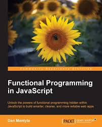

April Picks - FP, Asynchrony
Functional Programming in Javascript
 Lately, I have been trying to dedicate some time to get more into functional programming. Since I have a background in Java, I first started with Scala but ultimately found the resources I could find a bit too academic.
I thought this book by Dan Mantyla was easy to understand yet still explained quite a lot. It gently increases from map/filter/reduce to showing how Currying & compose work to Category Theory. The last chapter is dedicated to showing how to mix Javascript's two paradigms, object-oriented and functional, to write applications.
So I think this an ideal starting point for an FP beginner, especially coming from the Javascript perspective.
A good follow-up from this could be the mostly adequate guide by Brian Lansdorf.
Rethinking Asynchronous Javascript
There is probably no more in-depth resource on this topic than this course by Kyle Simpson for Front-End Masters.
Kyle demonstrates all of the available asynchrony models in Javascript, from Promises, to Generators, to Observables, to CSP. This would be an excellent guide if you're just getting into dealing with asynchrony in Javascript or you've been away and want to see what's changed.
I know for me, Generators are not something I've really thought a lot about, and Kyle showed how they can be used effectively for flow control.